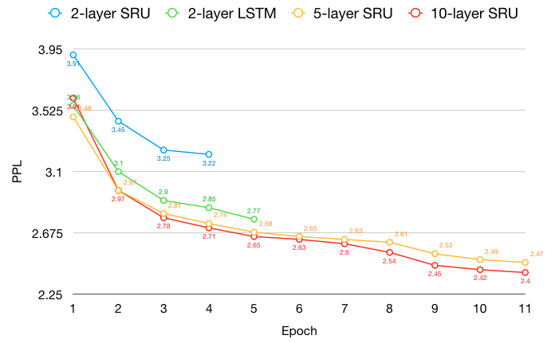

An Empirical Comparison between SRU and LSTM
Updated:
Interested in the work [1], I decided to conduct an empirical comparison between SRU and LSTM on the NMT task.
Simple Recurrent Unit (SRU)
Tao Lei et al. adopted skip connections (specifically highway connection) in equation 5, variational dropout (on input) and use as simple structures as possible. To fully speed up, they dropped the connection between gates and $\vec{h_{i-1}}$ in equation 1, 2 and 3. $\vec{C}_t$, $\vec{f}_t$ and $\vec{r}_t$ are cell state, forget gate and reset gate respectively. g() is an activation function.
$$\begin{eqnarray}
\vec{\tilde{C}}_t = W_c\vec{x}_t \\
\vec{f}_t = \sigma(W_f\vec{x}_t + \vec{b}_f) \\
\vec{r}_t = \sigma(W_r\vec{x}_t + \vec{b}_r) \\
\vec{C}_t = \vec{f}_t \oplus \vec{C}_{t-1} + (1-\vec{f}_t) \oplus \vec{\tilde{C}}_t \\
\vec{h}_t = \vec{r}_t \oplus \mbox{g}(\vec{C}_t) + (1-\vec{r}_t) \oplus \vec{x}_t
\end{eqnarray}$$
SRU vs LSTM
Setting
- SGD with learning rate 1
- Max gradient norm is 5
- Source and target embedding dimensions are 300
- Dropout rate is 0.3
- Bidirectional encoder
- General Luong Attention
- Don’t feed attention as an extra input feature to be fair
Results

Figure 1. perplexities of SRU and LSTM
Figure 2. speeds of SRU and LSTM
LSTMs with attention as an extra input feature

Figure 3. perplexities of LSTMs
Understand the implementation of the SRU
For better undertanding, I rewrited the cuda code of tanh version SRU which can be seen at here. In this code, I wrote down every step specifically and added some comments which made the code more reader-friendly.
Comments
- SRU is faster than LSTM.
- To achieve the same performance, SRU has to stack more layers than LSTM.
- Stacking multiple SRU layers is possible. Compared with 4 layers are the limit of LSTM, 10-layer SRU is still able to converge and get a lower perplexity.
- 2-layer LSTM works significantly better than 1-layer LSTM while 4-layer LSTM is no better than 2-layer LSTM.
- Larger embedding size boots final result little.
- Kowning previous attention surely helps model predict which is easy to notice. However, SRU achieves similar performance without previous attention information. I assume the skip connection and attention provides complementary information.
References
[1] Tao Lei et al. Training RNNs as Fast as CNNs. arvix 2017